最終更新日: 2026年8月27日
「おうちのおつかい」は、家族で買い物リストを共有するアプリです。 「あれ買ってきて」を家族みんなのリストにまとめて、誰が何を買うかを迷わず決められます。 このページ1枚で、主な機能の使い方をひと通り読めるようにまとめています。
📱 アプリ本体はこちら → おうちのおつかいを開く
Safari / Chrome で開いて「ホーム画面に追加」すると、アプリのように使えます。
それだけです。下部の「ストック / お買い物 / 設定」タブはボタンでも左右スワイプでも切り替えられます。 よく買うもの・支出・家計・ミッションはタブではなく、それぞれ専用のボタンから開くシートです（詳しくは各章）。
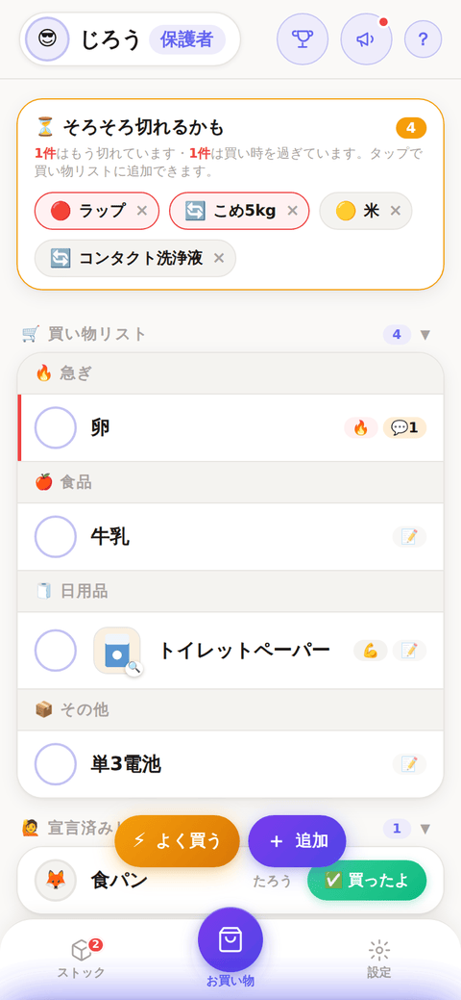
まだ何も登録していないときは、リストの代わりに🧺のキャラクターが 「お買い物したいものを登録しよう！」と案内し、その下に上の3ステップが出ます。
下部フローティングボタン列の ＋ 追加 から入力します。品名とカテゴリは必須、それ以外は任意です。
| 項目 | 内容 |
|---|---|
| カテゴリ（必須） | 🍎食品 / 🧻日用品 / 📦その他 のいずれか1つを必ずタップ。当てはまるものが無ければ「📦その他」を選びます（選ばずに保存しようとすると案内が出てブロックされます） |
| 📷 写真 | 撮影・ライブラリから選ぶ以外に、🎨「イラストから選ぶ」で20種のイラストも選べます |
| 手間 | ふつう / 💪ちょっと大変 / 😅めちゃ大変 → ポイントが増えます |
| 🔥 急ぎ | リストの最上段に固定＋ポイント+1 |
| 予算上限・ブランド指定・メモ | 「300円以下で」「パナソニック」「12ロール・ダブル」など |
| 担当者を指名 | 特定の人に頼む（その人だけに通知が届きます） |
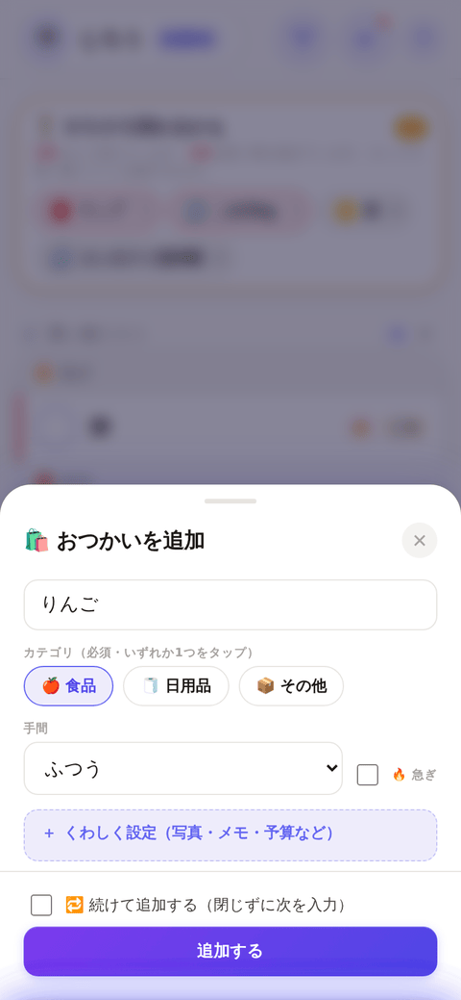
1行1品で、上から 🔥急ぎ → 🍎食品 → 🧻日用品 → 📦その他 の順に並びます。売り場を回る順に消せます。
| 操作 | 動き |
|---|---|
| ◯ を1回タップ | 「買うよ」宣言 → 宣言済みリストへ移動 |
| ◯ をもう一度タップ | 「買うよ」を取り消し → 買い物リストに戻る |
| ✅ 買ったよ | 完了 → 履歴へ移動＋ポイント獲得 |
| 行をタップ | 詳細を開く（写真・メモ・追加した人が見られる） |
◯ の中身で担当者が分かります。空 = 誰も宣言していない、🛒 = 自分、絵文字 = その人。他の人が宣言した品でも「✅買ったよ」は押せます（確認が出ます。子どもが宣言して親が持ち帰った、というときに使えます）。
行を開いた詳細には 💬コメント / ☆よく買うものに登録 / ✏️編集 / ×削除 のボタンが並びます（✏️と×は自分が追加した依頼だけ）。写真を外すときも ✏️編集 →「✕ 写真を外す」から。
いちばんおすすめの機能です。 買い忘れそうなものを、アプリが先回りして教えてくれます。お買い物タブの一番上に出て、タップするだけで買い物リストに追加できます（× で消せます）。
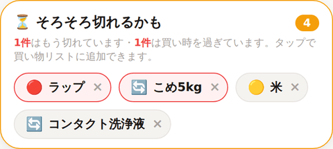
| 表示 | 根拠 |
|---|---|
| 🔴 切れてる / 🟡 残り少ない | ストックタブでの記録 |
| 🔄 約7日ごと・2日超過 など | 買い物履歴からの自動学習（同じ品を3回以上買うと働き始めます） |
いつから知らせるかは、ストックタブ上部の「知らせる時期」で変えられます（家族共通の設定）。品ごとに「買う間隔」を手で指定すると、学習より優先されます。
お買い物ページのフローティングボタン「⚡よく買う」から開きます。定番品を登録しておくと、タップして確認するだけでリストに追加できます。「🖼️カード」「☰リスト」の2種類の見た目から選べます（既定はリスト）。
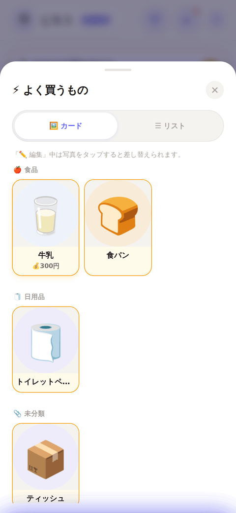
登録の仕方は2つあります。「＋新しく登録する」から入力する（お買い物リストの追加と同じくカテゴリ必須）か、買い物リストや履歴のカードにある☆をタップする（メモ・予算・カテゴリごと登録され、登録済みは⭐に変わります）。登録すると、同じ名前のストックが無ければ自動で作られます。
写真が無い項目のうち、アボカド・にんじん・鶏肉・牛乳などよくある品名は自動でそれっぽいイラストが出ます（品名からの連想で実際の写真ではありません）。
✏️ 編集で内容をまとめて直せます
「⚡よく買う」シートの「✏️編集」を押すと編集モードになり、カードをタップすると 品名・カテゴリ・手間・予算・メモ・写真などをまとめて直せる編集シートが開きます。 カテゴリが必須になる前に登録していてカテゴリが空のままの項目も、ここから選び直せます。 写真だけ変えたいときは、編集モード中にカードの写真部分をタップすると、 撮影・ライブラリから選ぶか、イラストを選び直すかを別々に選べます。
家にある物の残量を記録しておく場所です。丸をタップするたびに 🟢たっぷり → 🟡少ない → 🔴切れてる と切り替わります。🟡🔴にすると「⏳そろそろ切れるかも」に自動で出ます。
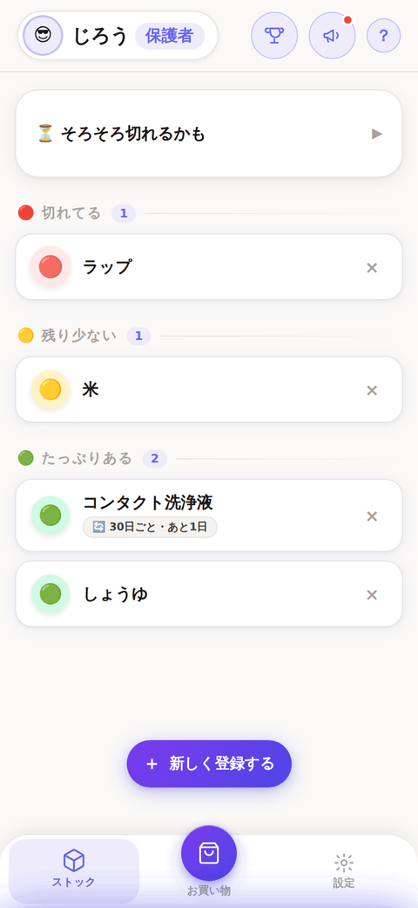
「＋新しく登録する」から追加でき、写真も付けられます。品名をタップすると詳細が開き、「🛒買い物リストに追加」や「買う間隔」の指定、写真の変更ができます。
右上（名前と？の間）の🏆ボタンから開きます。おつかい完了を続けると連続記録が伸び、称号が上がります（🌱見習い → 🚶配達員 → 🛒上手 → ⭐マスター → 👑達人）。
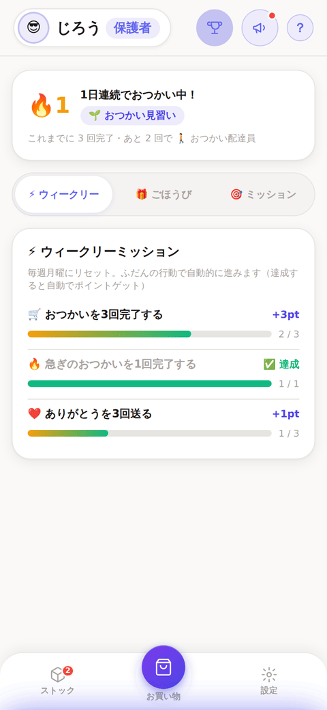
| サブタブ | 内容 |
|---|---|
| ⚡ ウィークリー | 毎週月曜リセット。ふだんの行動で自動的に進みます（例: おつかいを3回完了で+3pt） |
| 🎁 ごほうび | おつかい完了で貯まったポイントを、保護者が登録したごほうびと交換 |
| 🎯 ミッション | 保護者が子どもに個別のミッションを出せます（例: 「〇〇を3回やったら300円」） |
ポイントは、ふつう1pt／💪2pt／😅3pt、🔥急ぎはさらに+1pt。ポイントが足りないごほうびはボタンが薄く表示されます。
左上のアバター（プレイヤー情報）から開きます。買い物にかかった金額を集計できるほか、「＋その他の支出を記録」からレシート以外の立て替えも記録できます。
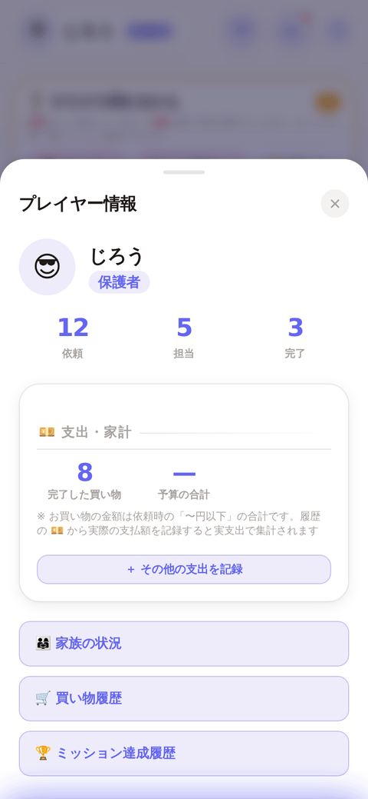
レシート写真を選ぶと端末内で金額を読み取りますが、写真自体は保存・送信されません。読み取り結果は保存前に必ず確認してください。
左上のアバター（プレイヤー情報）→「🛒買い物履歴」から開きます。完了した買い物は一覧から消えて、ここに日付ごと（今日／昨日／7月28日(火)…）に貯まります。
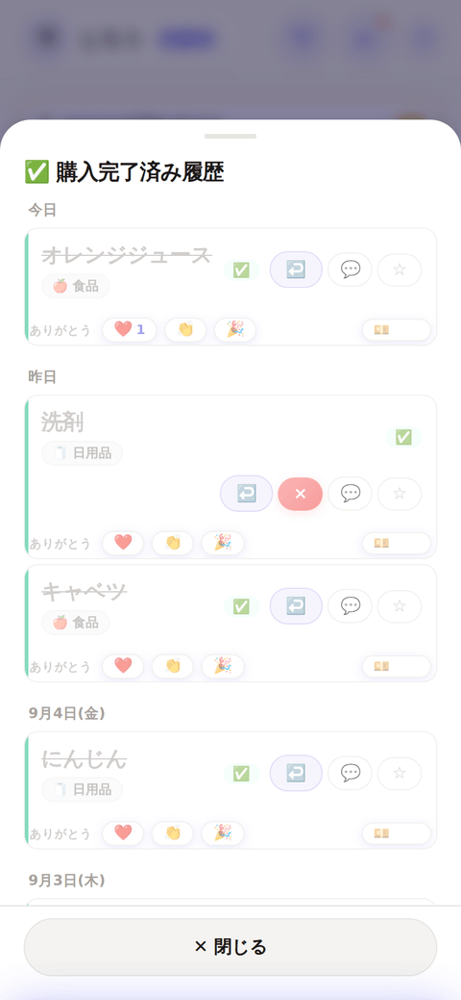
| できること | 内容 |
|---|---|
| ❤️👏🎉 ありがとう | 買ってくれた人にお礼を送れます（本人に通知が届きます） |
| 💴 金額 | 実際に払った金額を記録すると、「支出・家計」の集計が実支出ベースに変わります |
| ↩️ | 間違えて完了にしたものを買い物リストに戻せます |
| ☆ | よく買うものに登録 |
完了から90日経つと自動でアーカイブへ移り、動作が重くならないようにしています。
おつかい・ストック・よく買うもののどれにも写真を付けられます。「実際に撮る・ライブラリから選ぶ」以外に、🎨「イラストから選ぶ」で用意した20種のイラストを選ぶこともできます。写真を付けると、同じ商品でも型番違いや詰め替え用などを一目で見分けられます。
設定タブの「家族招待」に表示される招待コード（6文字）を家族に共有すると、参加してもらえます。参加した人は最初「こども」になり、保護者が役割を変更できます。
| 保護者 | 副保護者 | こども | |
|---|---|---|---|
| 買い物の追加・宣言・完了 | ◯ | ◯ | ◯ |
| ごほうびの登録・削除 | ◯ | — | — |
| ミッションを出す | ◯ | ◯ | — |
| 役割の変更・メンバー管理 | ◯ | — | — |
設定 → 通知 →「通知をオンにする」で有効化できます。新しい依頼の追加、買ってきたお知らせ、ありがとう、ミッション達成のほか、毎日決まった時刻の未受け取りリマインドと、毎週日曜20時の週まとめ通知（そろそろ切れそうな品も含む）が届きます。通知が要らない人は、その端末だけで「通知をオフにする」で止められます。
お買い物タブの赤いバッジは、家族から新しく頼まれた（まだ見ていない）未完了の依頼だけを数えます。一度お買い物タブを見ると既読になり、同じ依頼で何度も表示されることはありません。
| 項目 | 内容 |
|---|---|
| 👤 プロフィール | 名前・絵文字アイコン |
| 👨👩👧👦 家族招待 | 招待コード・メンバー一覧 |
| 🛡️ メンバー管理 | 保護者のみ。家族から外す／アカウント削除ができます |
| 🔔 通知 | サウンド／テーマ／買い物リマインドの時刻 |
| 🔧 メンテナンス | データの再読み込み・アプリの更新・強制ログアウト |
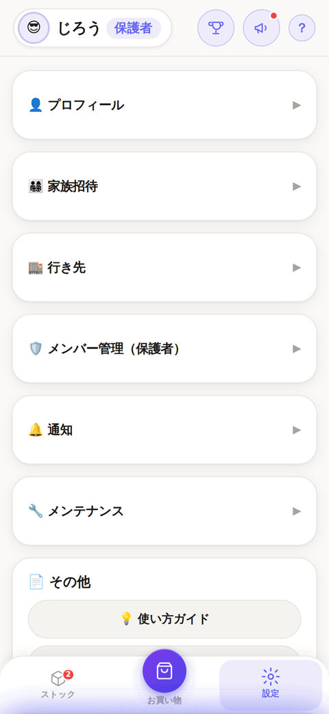
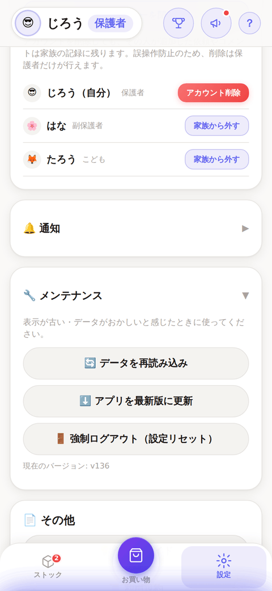
ホーム画面を下に引っ張っても更新できます。新しいバージョンが出ると、何か入力中だったりシートを開いていたりしない安全なタイミングで「🆕新しいバージョンがあります」という全画面の案内が出ます。閉じるボタンは無く、「アップデート」を押すまで続きの操作はできません（利用中に急に画面が切り替わらないようにするための仕様です）。
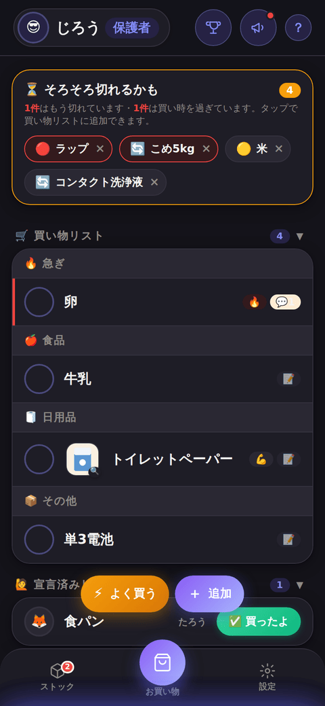
初期設定は「端末の設定に合わせる」です。スマホがダークモードならアプリも暗くなります。設定 → 🎨テーマ から「ライト」「ダーク」に固定もできます（端末ごとに保存されます）。
| 症状 | 対処 |
|---|---|
| 新機能が出ていない | 設定 → 🔧メンテナンス → ⬇️アプリを最新版に更新 |
| 表示が最新でない気がする | ホーム画面を下に引っ張る、または🔄データを再読み込み |
| 通知が来ない | 設定 → 通知の状態を確認。iPhoneはホーム画面に追加したアプリから開く必要があります |
| データがおかしい | 設定 → 🔧メンテナンス → 🚪強制ログアウト（家族のデータは消えません） |
| 家族に入れない | 招待コードは6文字（英大文字と数字）。保護者に再確認を |
| 写真だけ保存されない | 内容は保存されています。通信環境を確認して、✏️編集から選び直してください |
| そろそろ切れるかもの予告が早い・遅い | ストック → ⏳そろそろ切れるかも → 知らせる時期を変更 |
| そろそろ切れるかもに出てくる周期がずれている | ストックタブで品名をタップ → 買う間隔を手で指定（履歴の学習より優先されます） |
| よく買うものにカテゴリが付かない | 「✏️編集」→ カードをタップして開く編集シートから、カテゴリを選び直せます |